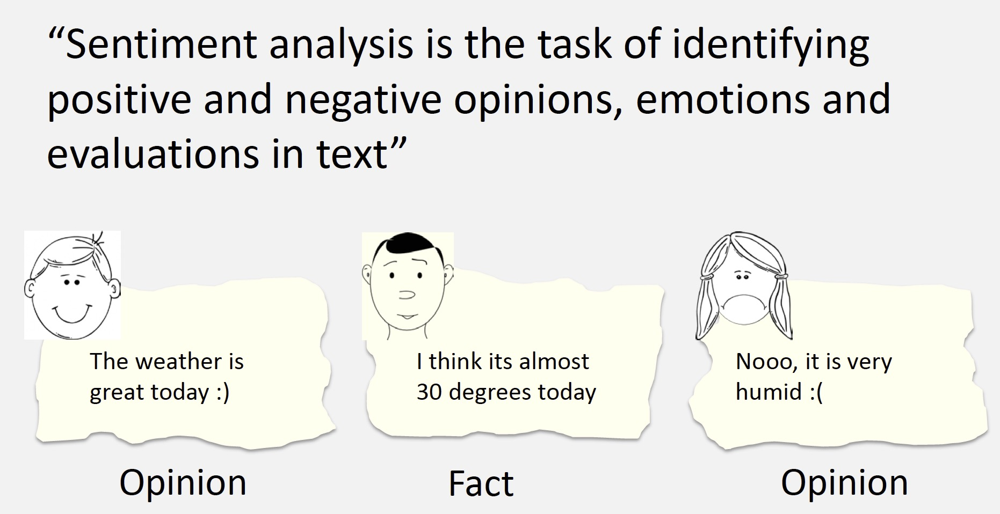
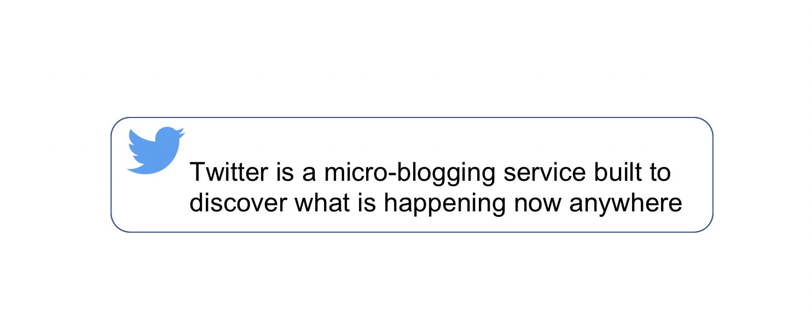
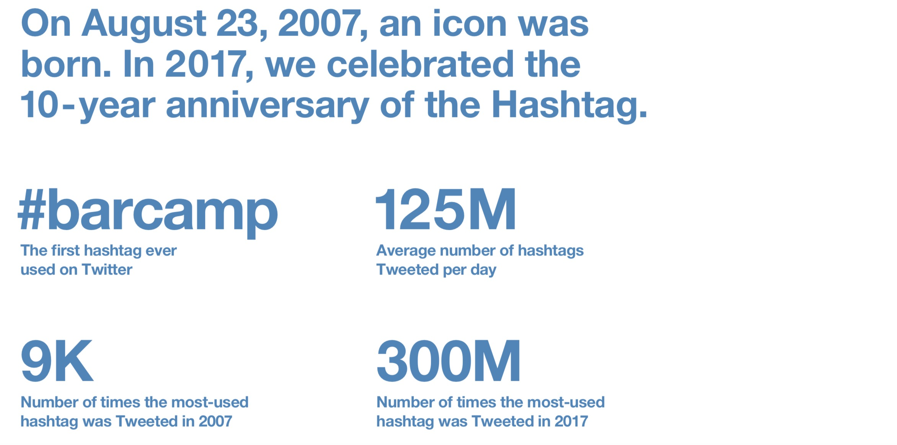
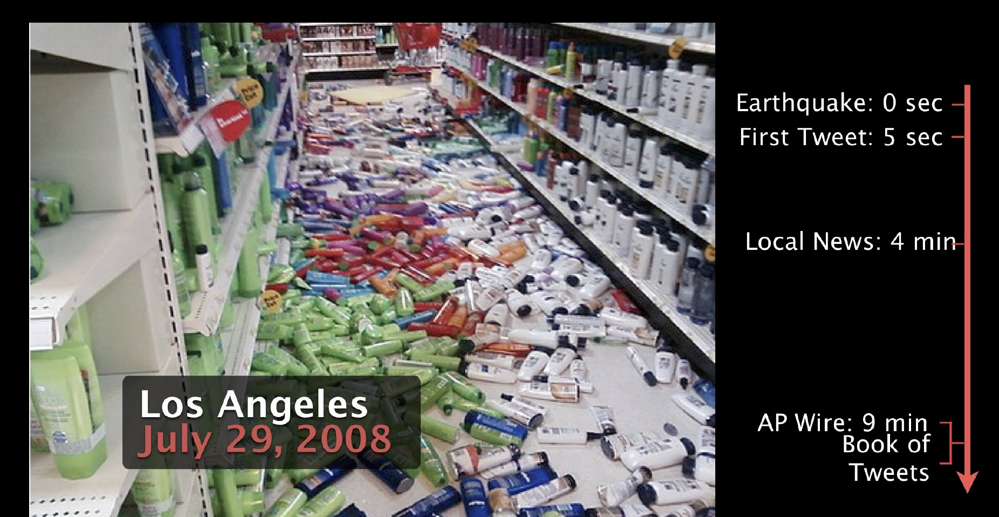
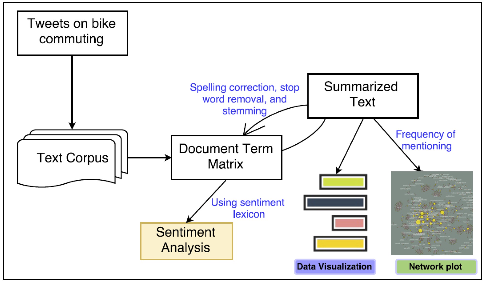
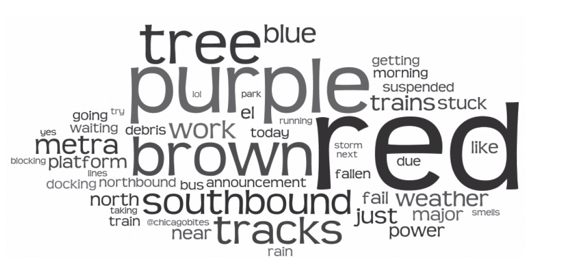
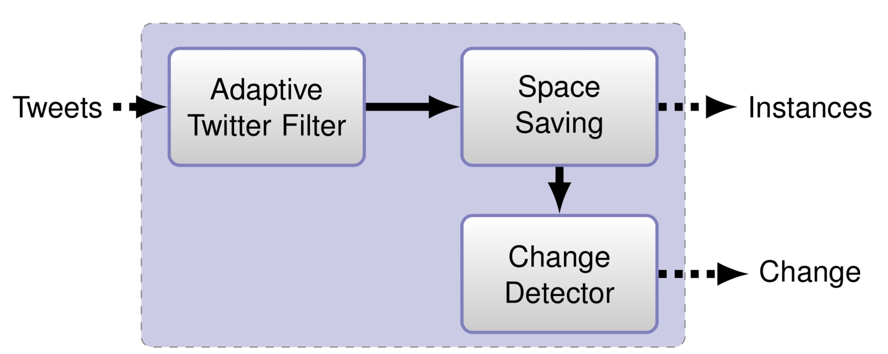
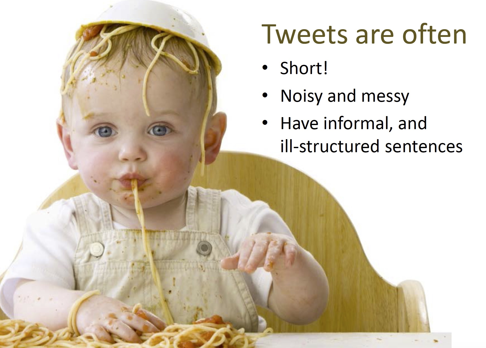
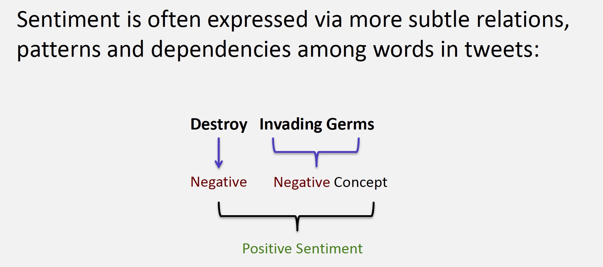
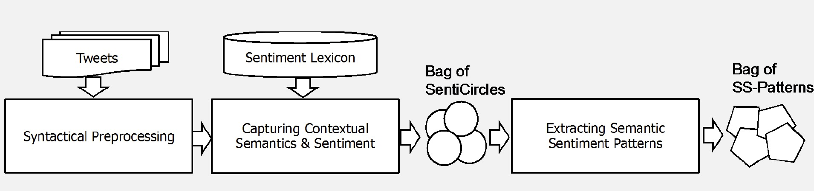

Sentiment Analysis and Potential Application to Transit
Subasish Das, Ph.D.
Associate Transportation Researcher
Texas A&M Transportation Institute (TTI)
June 14, 2018
Outline
- Sentiment Analysis
- Twitter Mining
- Use of Historical Tweets
- Twitter Streaming and Transit
Sentiment Analysis

Growth of Twitter
Source: Twitter 2018 Annual Report
Why Twitter Mining?
Mining Historical Tweets
Source: Das et al. (2018). Social Media Hashtags Associated with Bike Commuting: Applying 3 Natural Language Processing Tools. 2018 TRB Annual Meeting, Washington D.C.
Sentiment Analysis

Source: Das et al. (2018). Social Media Hashtags Associated with Bike Commuting: Applying 3 Natural Language Processing Tools. 2018 TRB Annual Meeting, Washington D.C.
Application to Transit
- Can change the way transit agencies measure rider satisfaction
- Can decipher enormous amount of rider inputs in real-time
- Can deliver real-time information on disruptions and disturbances
Word Cloud on #CTA Tweets
Source: Collins et al. (2013). A Novel Transit Rider Satisfaction Metric: Rider Sentiments Measured from Online Social Media Data. Public Transportation. Journal of Public Transportation.
Real-time Twitter Streaming
- Need to convert tweet texts in sparse vector of features on real-time
- Change adaption fast (can not store tweets on memory)
Detecting Sentiment Change in Real-time
Noise in Data
negative times negative
Noise Reduction Strategy
- Identify semantics inferred from words’ occurrences in pair
- Capture the contextual semantics and sentiment of words
- Extract semantic sentiment patterns
Framework
Key Points
- Twitter is an enormous source of public opinion
- Real-time sentiment analysis will be useful in understanding problems and anomalies
- Have great potentials in understanding rider satisfaction
- Cutting edge algorithms can remove noise in data significantly